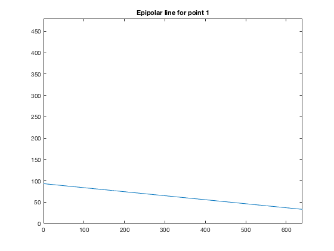
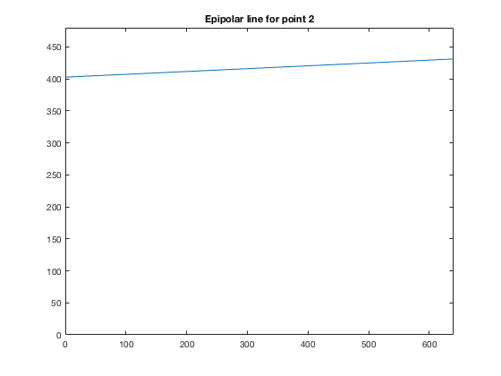
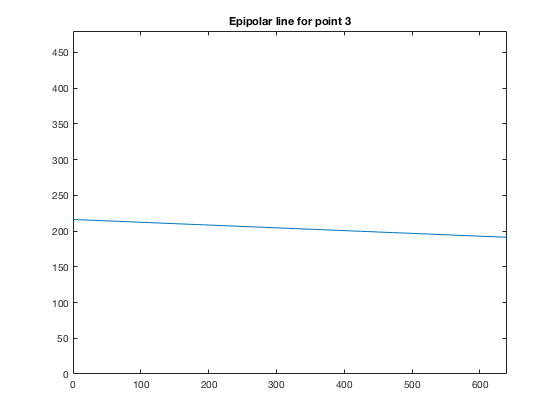
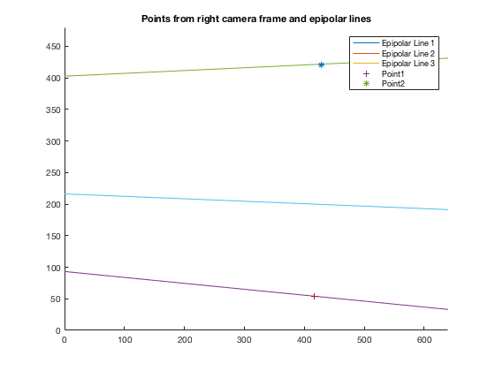

psi = [400,0,320;0,-400,240;0,0,1];
R_WL = [0.913545457642601,-0.063627629171822,0.401729040058774;0.287606238475951,0.799453749866612,-0.527405302792764;-0.287606238475951,0.597348496800808,0.748637044875238];
R_WR = [0.994521895368273,-0.016351854232753,0.103241544429788;0.073912785203567,0.808411029059454,-0.583959337863936;-0.073912785203567,0.588391217607967,0.805191079946410];
T_WL = [-8.659258262890683;2.169872981077807;4.830127018922193];
T_WR = [10.659258262890683;5.830127018922193;1.169872981077807];
rL = [552,589,531;85,405,212;1,1,1];
rR = [417,428;54,421;0,1];
G_WR = [R_WR, T_WR; 0,0,0,1];
G_WL = [R_WL, T_WL; 0,0,0,1];
G_LR = G_WL^(-1) * G_WR;
R_LR = G_LR(1:3,1:3);
T_LR = G_LR(1:3,4);
fprintf('a) Essential matrix E_LR:\n');
T_LR_HAT = [0, -T_LR(3), T_LR(2); T_LR(3), 0, -T_LR(1); -T_LR(2), T_LR(1), 0];
E_LR = T_LR_HAT * R_LR;
disp(E_LR);
fprintf('b) Fundamental matrix F_LR:\n');
F_LR = inv(psi') * E_LR * inv(psi);
disp(F_LR);
disp('c) Line equations');
eqn1 = rL(1:3,1)' * F_LR;
eqn1mx = [-eqn1(1) / eqn1(2), -eqn1(3) / eqn1(2)];
fprintf('\nPoint 1:\n');
fprintf('%fx + %fy + %f = 0\n', eqn1(1), eqn1(2), eqn1(3));
fprintf('y = %fx + %f\n', eqn1mx(1), eqn1mx(2));
eqn2 = rL(1:3,2)' * F_LR;
eqn2mx = [-eqn2(1) / eqn2(2), -eqn2(3) / eqn2(2)];
fprintf('\nPoint 2:\n');
fprintf('%fx + %fy + %f = 0\n', eqn2(1), eqn2(2), eqn2(3));
fprintf('y = %fx + %f\n', eqn2mx(1), eqn2mx(2));
eqn3 = rL(1:3,3)' * F_LR;
eqn3mx = [-eqn3(1) / eqn3(2), -eqn3(3) / eqn3(2)];
fprintf('\nPoint 3:\n');
fprintf('%fx + %fy + %f = 0\n', eqn3(1), eqn3(2), eqn3(3));
fprintf('y = %fx + %f\n', eqn3mx(1), eqn3mx(2));
fprintf('\nd) Plot of epipolar lines\n');
x_val = [0:.25:640];
y_val_p1 = x_val .* eqn1mx(1) + eqn1mx(2);
y_val_p2 = x_val .* eqn2mx(1) + eqn2mx(2);
y_val_p3 = x_val .* eqn3mx(1) + eqn3mx(2);
figure(1);
plot(x_val, y_val_p1);
axis([0,640,0,480]);
title('Epipolar line for point 1');
figure(2);
plot(x_val, y_val_p2);
axis([0,640,0,480]);
title('Epipolar line for point 2');
figure(3);
plot(x_val, y_val_p3);
axis([0,640,0,480]);
title('Epipolar line for point 3');
disp('e) Plot of points and epipolar lines in one graph')
figure(4);
hold on
plot(x_val, y_val_p1, '-','DisplayName','Epipolar Line 1');
plot(x_val, y_val_p2, '-','DisplayName','Epipolar Line 2');
plot(x_val, y_val_p3, '-','DisplayName','Epipolar Line 3');
plot([417],[54],'+','DisplayName','Point1');
plot([428],[421],'*','DisplayName','Point2');
axis([0,640,0,480]);
legend('show');
title('Points from right camera frame and epipolar lines');
hold off
fprintf('Point %d in the left camera corresponds to point %d in right camera\n',1,1);
fprintf('Point %d in the left camera corresponds to point %d in right camera\n',2,2);
fprintf('Point %d in the left camera has no corresponding point in right camera\n',3);
a) Essential matrix E_LR:
-0.0000 -3.0902 -0.4894
-3.0902 -0.0000 -19.7538
-0.4894 19.7538 -0.0000
b) Fundamental matrix F_LR:
-0.0000 0.0000 -0.0059
0.0000 -0.0000 0.0432
-0.0059 -0.0556 3.7497
c) Line equations
Point 1:
-0.004217x + -0.044904y + 4.187925 = 0
y = -0.093916x + 93.264640
Point 2:
0.001963x + -0.044189y + 17.796452 = 0
y = 0.044426x + 402.734266
Point 3:
-0.001764x + -0.045309y + 9.797878 = 0
y = -0.038941x + 216.244519
d) Plot of epipolar lines
e) Plot of points and epipolar lines in one graph
Point 1 in the left camera corresponds to point 1 in right camera
Point 2 in the left camera corresponds to point 2 in right camera
Point 3 in the left camera has no corresponding point in right camera
   